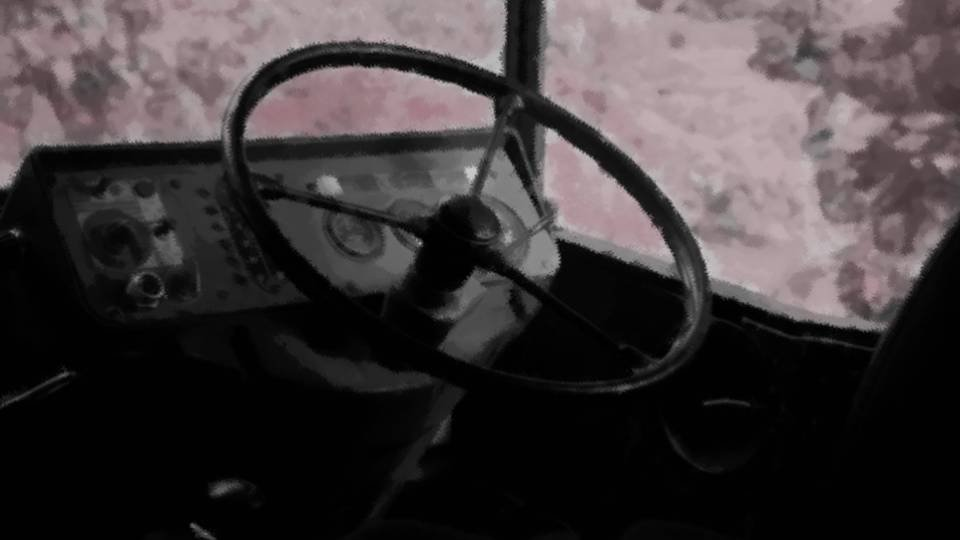

Script 000020BB

"All right, we'll be there in 10 minutes."
―What is that thing? That ridiculously huge cherry tree...
"I haven't been told the details either. All we have to do is follow orders."
―And if we find survivors, we're to kill them...
―What is that thing? That ridiculously huge cherry tree...
"I haven't been told the details either. All we have to do is follow orders."
―And if we find survivors, we're to kill them...
"What? You scared?"
―N-no, it's not that!
"Is that so. Honestly, I'm scared, though."
―Well, sure, it means killing ordinary people who don't know anything...
―N-no, it's not that!
"Is that so. Honestly, I'm scared, though."
―Well, sure, it means killing ordinary people who don't know anything...
"That's not it. I mean the target."
―The target? If I recall, the CO said 'divine messenger,' right?
"This 'divine messenger' is supposedly something like the culprit of the Megasawa City case."
―The Megasawa City case? Now that you mention it, I think there was a case like that when I was a kid...
―The target? If I recall, the CO said 'divine messenger,' right?
"This 'divine messenger' is supposedly something like the culprit of the Megasawa City case."
―The Megasawa City case? Now that you mention it, I think there was a case like that when I was a kid...
"Yeah, you young guys wouldn't know about it.
Supposedly they kill with movements you'd never think were human.
Word is they can even dodge bullets."
―That's what we're up against!? Nobody told us that!
"That's why a specially trained unit like ours is being sent in."
―............
―That's what we're up against!? Nobody told us that!
"That's why a specially trained unit like ours is being sent in."
―............
"So you are scared?"
―N-no! I'm fine! Besides...
"Hm?"
―I'm getting married at the end of this month...
―N-no! I'm fine! Besides...
"Hm?"
―I'm getting married at the end of this month...
"Don't go jinxing yourself..."
―B-but that's exactly why I want to complete the mission and get back home!
"You really think you'll make it back safe?"
―Huh?
―B-but that's exactly why I want to complete the mission and get back home!
"You really think you'll make it back safe?"
―Huh?
"Monsters like that running around, us sneaking into a city buried in cherry blossoms.
You think they'd just send us home free and clear, after we've learned something that big?"
―Wait a minute...!
"Don't take it seriously. I'm joking. The government's real aim is probably to test whether we can make it back safely."
―A test...?
―Wait a minute...!
"Don't take it seriously. I'm joking. The government's real aim is probably to test whether we can make it back safely."
―A test...?
"Whether it's a place people with full gear and training can come back from alive.
If we don't come back, this place will probably become a no-entry zone forever."
―............
"Listen, if it comes down to it, you get out of there, even if you're the only one."
―B-but running away by myself...
―............
"Listen, if it comes down to it, you get out of there, even if you're the only one."
―B-but running away by myself...
"All vehicles, do you read? This is Car 1. We're nearly at the center of Motoki City.
The mission is the elimination of survivors and the 'divine messengers'.
However, if you sense you're in danger, get out immediately.
Running is part of your orders too. Out."
―............
"Well, your odds of getting married just went up."
―Y-yes!
―............
"Well, your odds of getting married just went up."
―Y-yes!
"Right, we're getting out. First we search the city center, then move out toward the outskirts.
Stay on your guard!"
―Yes!
―Yes!